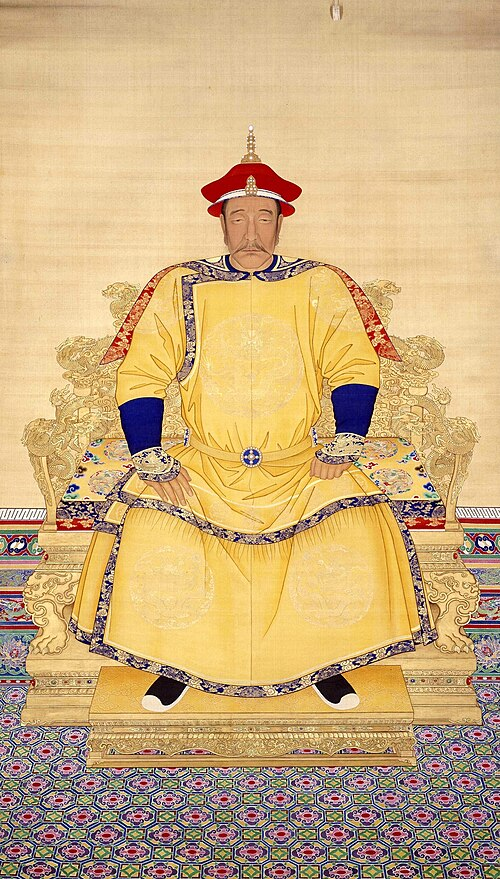
清朝
十二帝
1616年建号天命，1912年退位宣统。十二位皇帝，以官书原文为底本，逐条整理。
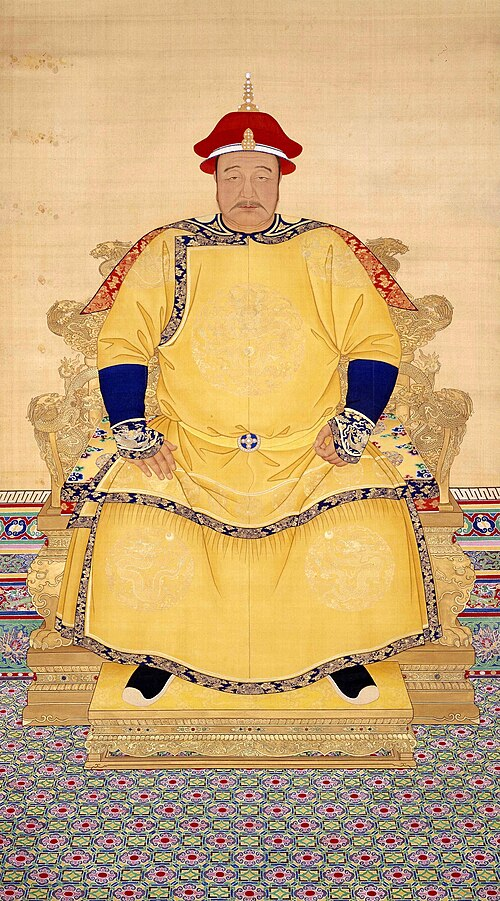
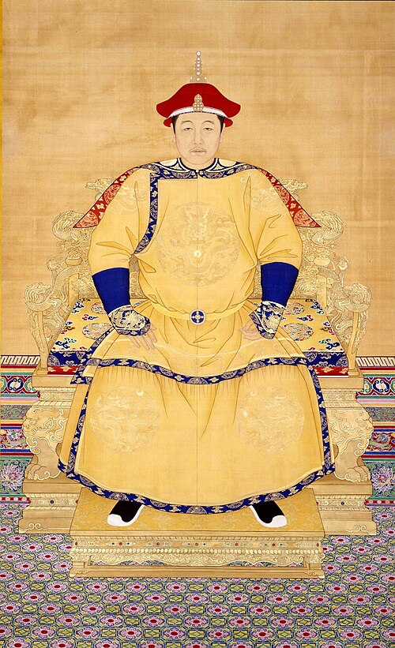
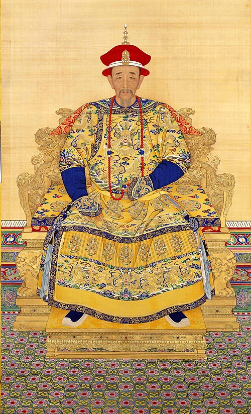
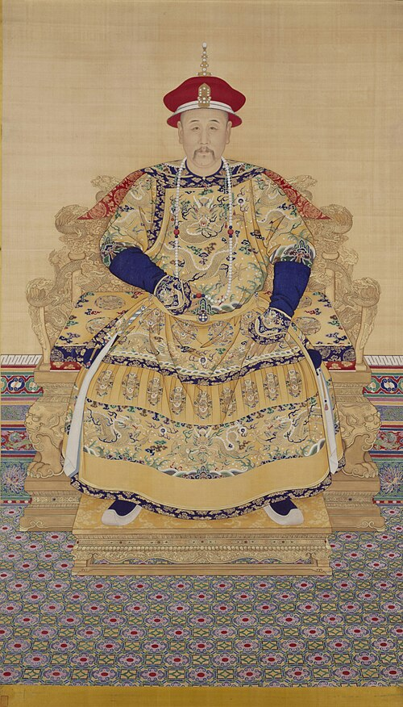
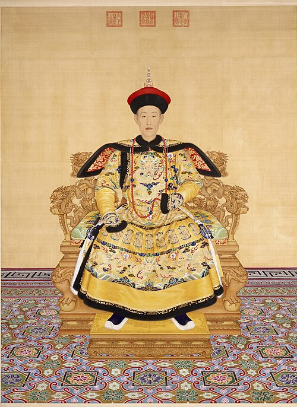
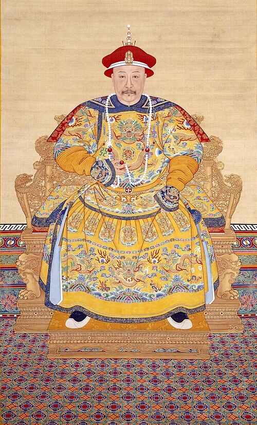
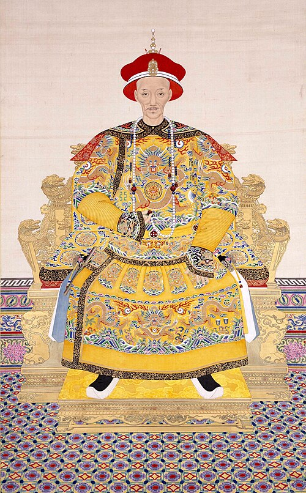
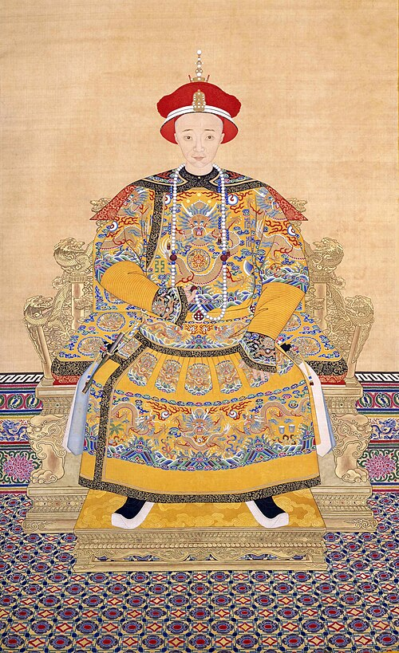
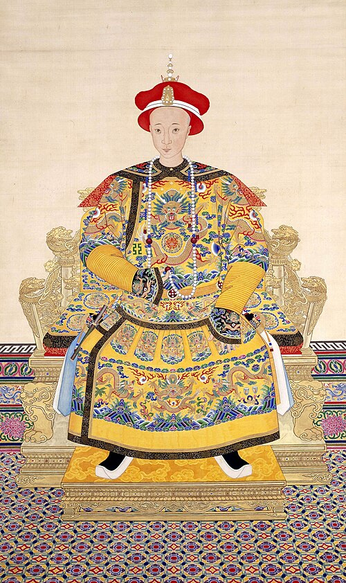
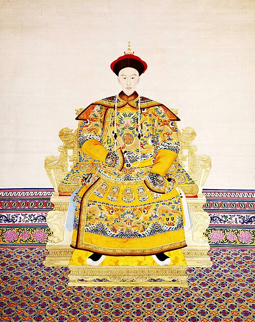
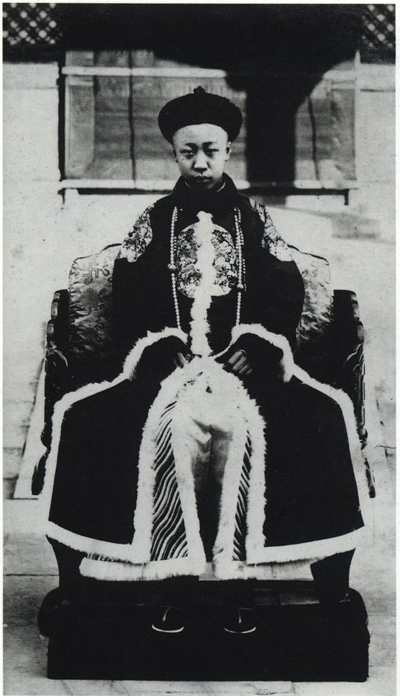
先看这几处转轴
称汗、称帝、入关、密储、内禅、条约、热河、退位。走完这一页，再点皇帝。
康熙这一段
太子废了两次。即位和驾崩，官书都写到了日子。
已经对上日子的几处
和珅不是第五天处死。继后那拉氏，官书没有写成抗旨宫斗。十三日崩，二十日才即位礼。
纸上的字
朱批是红笔。御笔是纸本。令旨不是幼帝亲批。黄标只给外链。
这些事，今天在哪儿
战场、陵寝、园子、关城——这些地方今天什么样，能不能去，和当时差多远。
今地
萨尔浒之战
辽宁省抚顺市大伙房水库
古战场多半已经在水下。岸上还剩两座城，隔水相望。
参考线索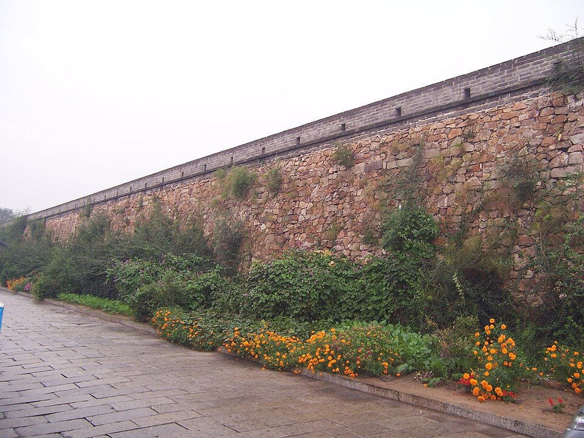
今地
宁远之战
辽宁省葫芦岛市兴城市区
当年的宁远卫城，今天还能沿着城墙走一圈。
参考线索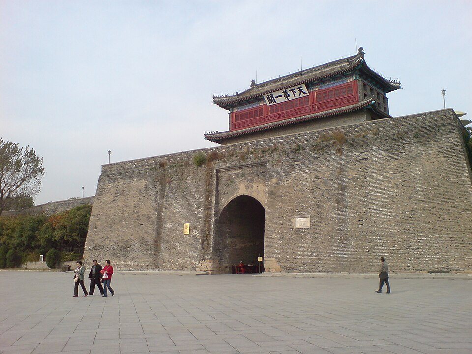
今地
山海关之战
河北省秦皇岛市山海关区
入关那一仗的关城，门还在。海边那一段不是主战场。
参考线索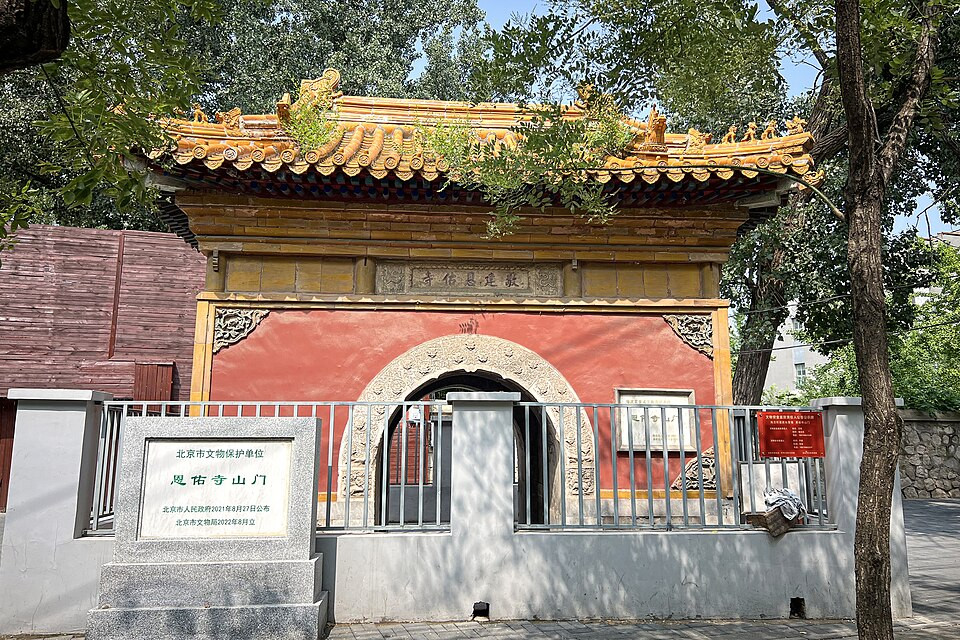
今地
畅春园
北京市海淀区，北京大学西门外一带
园子没了，路边还剩两座寺门。崩条写的是寝宫，不是清溪书屋。
参考线索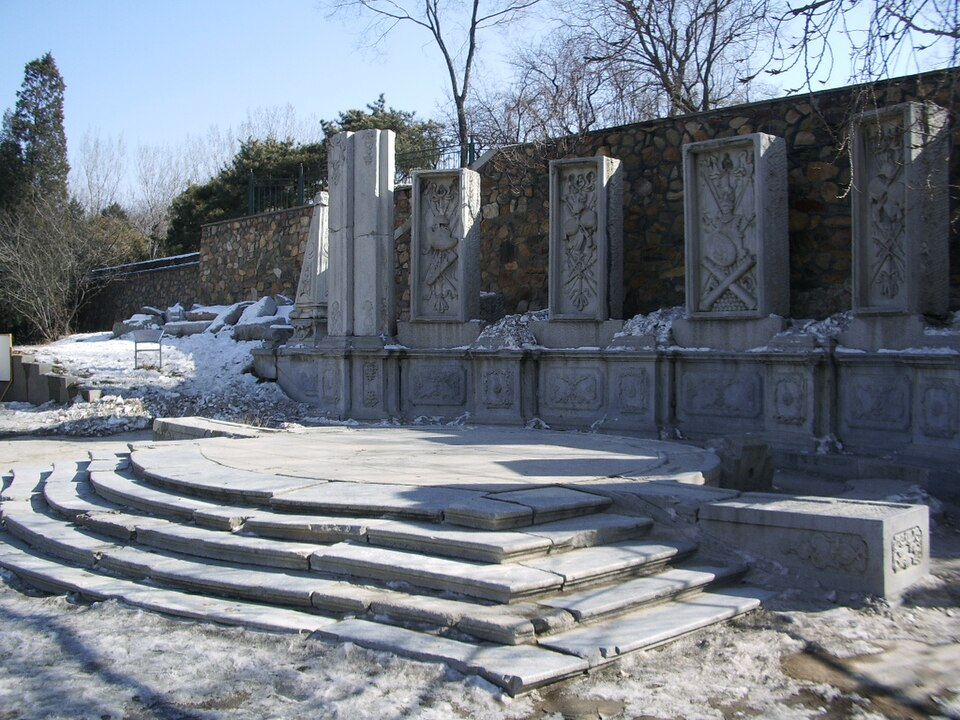
今地
圆明园被焚掠
北京市海淀区圆明园遗址公园
园子烧了，今天能看见的是残石。
参考线索今地
热河行宫
河北省承德市避暑山庄
康熙修来避暑，乾隆接着扩建，咸丰后来避走到这里。
参考线索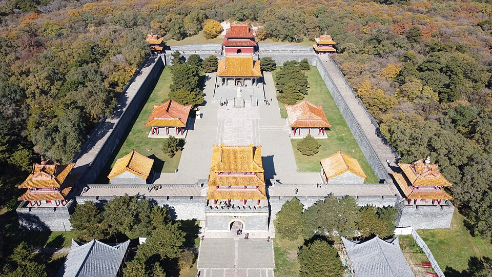
今地
昭陵
辽宁省沈阳市皇姑区北陵公园
关外三陵中最大的一座，如今包在沈阳的公园里。
参考线索今地
木兰围场
河北省承德市围场满族蒙古族自治县
皇家猎场早已废弛。今天这一带是林场和草原。
参考线索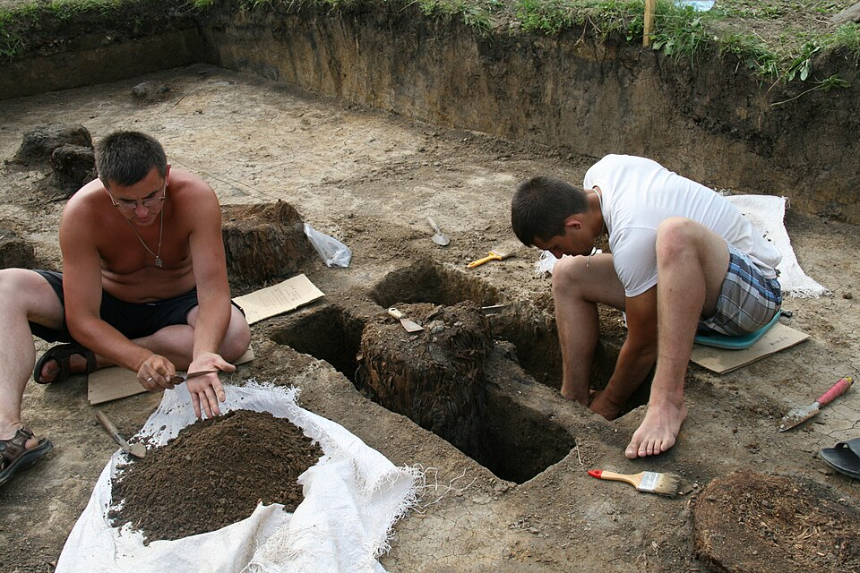
今地
雅克萨之战
俄罗斯阿穆尔州斯科沃罗季诺区阿尔巴津诺村
清军在此两度攻城。木城早已拆毁，遗址在对岸的俄国村子里。
参考线索今地
割让香港岛
香港岛
1842年割出去的是一座岛。今天从对岸看，已是另一座城市。
参考线索